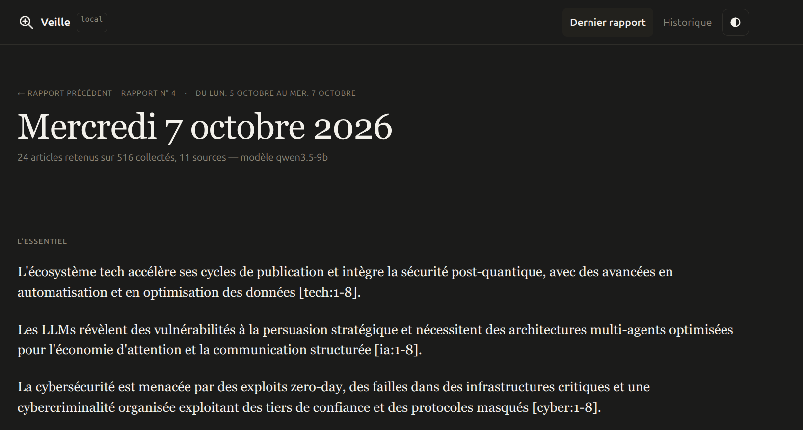
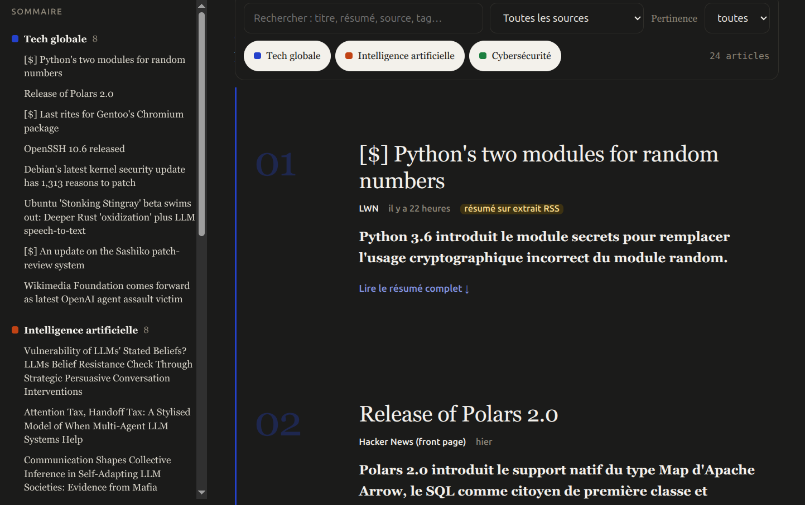
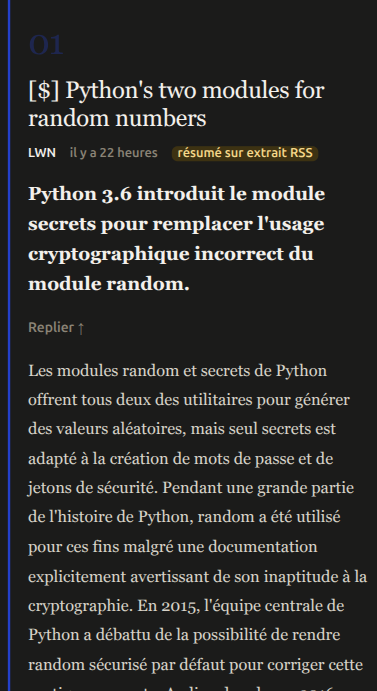

Veille technologique 100 % locale. Des flux RSS à un rapport lisible, triés et résumés par un LLM qui tourne sur ta machine — rien ne sort du poste.

Les lecteurs RSS classiques entassent des centaines d'articles non lus. Les agrégateurs IA grand public envoient le contenu dans le cloud. veille fait le tri à la place de l'utilisateur, avec un LLM qui tourne en local :
[n], historique interrogeable en SQLiteRien ne quitte la machine. Aucune clé API requise pour l'usage courant.
flowchart LR
A["1 · Collecte"] --> B["2 · Tri heuristique"]
B --> J["grille LLM"]
J --> C["3 · Compilation"]
C --> D["4 · Rendu"]
DB[("SQLite")]
A -.-> DB
B -.-> DB
C -.-> DB
classDef neutral fill:#2A2A28,color:#fff,stroke:none
classDef accent fill:#2C3E63,color:#fff,stroke:none
classDef db fill:#55534A,color:#fff,stroke:none
class A,B,C,D neutral
class J accent
class DB db
Une note libre 0-10 sature avec les petits modèles — mesuré : 18/18 entre 8 et 10 sur un test réel. Le LLM répond donc à des questions fermées ; la note est calculée en Python, pas par le modèle.


Résumé complet et points clés repliés par défaut, un clic pour tout voir. Thème clair/sombre synchronisé avec les préférences système.
python -m venv .venv && . .venv/bin/activate
pip install -e .
cp config.example.yaml config.yaml
ollama pull qwen3:8b
veille run| Taille | Constat |
|---|---|
| 3-4B | rapide, mais sature à 10/10 — le tri perd son intérêt |
| 7-9B | meilleure discrimination, inconsistant, 3× plus lent |
| 30B+ MoE | nette discrimination, rapide malgré la taille totale |
Projet personnel, construit avec l'aide d'un assistant IA (Claude) en pair-programming — architecture, décisions et tests validés manuellement à chaque étape. Licence MIT.